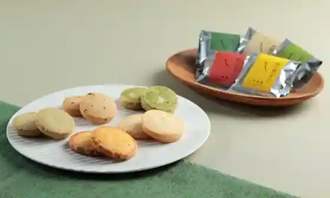
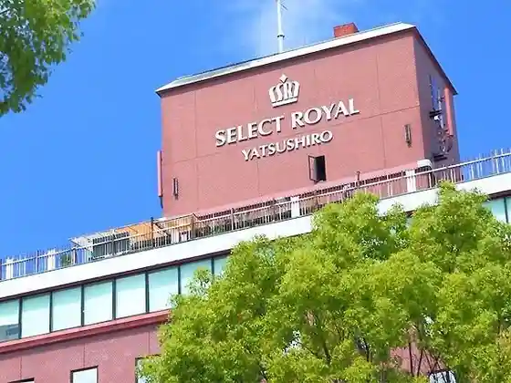
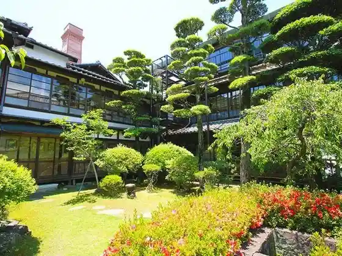
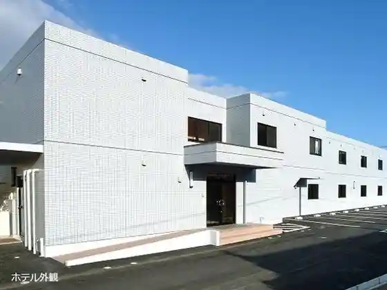

Yatsushiro Kaze Ka
Yatsushiro, Kumamoto · 0965-35-0505 · Official / source link

Hinagu Onsen
Yatsushiro, Kumamoto · 0965-38-0267 · Official / source link
Serekutoroiyaru Yatsushiro
Yatsushiro, Kumamoto · 0965-34-1111 · Official / source link

Kinpa Ro
Yatsushiro, Kumamoto · 0965-38-0611 · Official / source link

Tsuru no Yu Yatsushiro Mise
Yatsushiro, Kumamoto · 0965-39-1000 · Official / source link

Toyoko INN Shin Yatsushiro Ekimae
Yatsushiro, Kumamoto · 0965-31-1045 · Official / source link
Shoku Tokoro Sakamoto Ayu Yana
Yatsushiro, Kumamoto · 0965-45-3800 · Official / source link
Higashi Hen Nature Park
Yatsushiro, Kumamoto · 0965-33-4123 · Official / source link
Yatsushiro Shrine (Myoken Miya)
Yatsushiro, Kumamoto · 0965-32-5350 · Official / source link
Yatsushiro Castle Ruins
Yatsushiro, Kumamoto · 0965-33-4533 · Official / source link
Matsui Shrine
Yatsushiro, Kumamoto · 0965-33-0171 · Official / source link
Miyazaki Hachiro Senshi no Chi
Yatsushiro, Kumamoto · 0965-33-4533 · Official / source link
Jusan Omoshi to
Yatsushiro, Kumamoto · 0965-32-2209 · Official / source link
Yatsushiro Ritsu Museum Mirai no Mori Museum
Yatsushiro, Kumamoto · 0965-34-5555 · Official / source link
Kyu Gun Chiku Shinchi Kogo Himon
Yatsushiro, Kumamoto · 0965-33-4533 · Official / source link
Shohin Ken
Yatsushiro, Kumamoto · 0965-33-0171 · Official / source link
Sakamoto Hachiryu Tenmondai
Yatsushiro, Kumamoto · 0965-45-3453 · Official / source link
Hikawa Dam
Yatsushiro, Kumamoto · 0965-67-2730 · Official / source link
Goka So Shizen Juku
Yatsushiro, Kumamoto · 0965-67-5530 · Official / source link
Hinagu Onsen Shrine
Yatsushiro, Kumamoto · 0965-32-5350 · Official / source link
Goka So Heike Village
Yatsushiro, Kumamoto · 0965-67-5372 · Official / source link
Hidari Za Ie
Yatsushiro, Kumamoto · 0965-67-5510 · Official / source link
Sekisho Kan
Yatsushiro, Kumamoto · 0965-65-2700 · Official / source link
Fureai Center Izumi
Yatsushiro, Kumamoto · 0965-67-3500 · Official / source link
Goka So Keiryu Campground
Yatsushiro, Kumamoto · 0965-67-5372 · Official / source link
Roadside Station Toyo Koryu Center
Yatsushiro, Kumamoto · 0965-65-2112 · Official / source link
Sho Ki no Suspension Bridge
Yatsushiro, Kumamoto · 0965-67-2111 · Official / source link
Sendan Todoroki (Todoro) Falls
Yatsushiro, Kumamoto · 0965-67-2730 · Official / source link
Ryu Mineyama Nature Park
Yatsushiro, Kumamoto · 0965-33-4123 · Official / source link
Ume no Ki Todoroki Falls
Yatsushiro, Kumamoto · 0965-67-2111 · Official / source link
Kasamatsu Hashi Park
Yatsushiro, Kumamoto · 0965-65-2114 · Official / source link
Shaka In
Yatsushiro, Kumamoto · 0965-67-2730 · Official / source link
Ogata Ie
Yatsushiro, Kumamoto · 0965-67-5118 · Official / source link
Mizushima
Yatsushiro, Kumamoto · 0965-33-4115 · Official / source link
Hashiudo Falls
Yatsushiro, Kumamoto · 0695-45-2211 · Official / source link
Yatsushiro Myoken Matsuri
Yatsushiro, Kumamoto · 070-5819-8246 · Official / source link
Goka So
Yatsushiro, Kumamoto · 0965-36-5800 · Official / source link
Yamazato Ryori no Yado Sakura So
Yatsushiro, Kumamoto · 0965-67-5267 · Official / source link
Sho Kiyama So
Yatsushiro, Kumamoto · 0965-67-5211 · Official / source link
Kuma Nansuteshon
Yatsushiro, Kumamoto · 0965-37-8281 · Official / source link
Matsu Baths
Yatsushiro, Kumamoto · 0965-38-0573 · Official / source link
Higashi Yu
Yatsushiro, Kumamoto · Official / source link
O Matsuri Denden Kan (Yatsushiro Minzoku Dentogeino Densho Kan)
Yatsushiro, Kumamoto · 0965-37-8737 · Official / source link
Supotsu Gasshukujo Yume Doriimu
Yatsushiro, Kumamoto · 0965-37-1204 · Official / source link
Yatsushiro Eki
Yatsushiro, Kumamoto · 0965-32-4472 · Official / source link
Kuma Monpoto Yatsushiro (Yatsushiro)
Yatsushiro, Kumamoto · 096-333-2515 · Official / source link
Katorikku Yatsushiro Kyokai
Yatsushiro, Kumamoto · 0965-32-4065 · Official / source link
Sharutoru Hijiri Pauro Shudojo Kai Yatsushiro Shudoin
Yatsushiro, Kumamoto · 0965-32-6850 · Official / source link